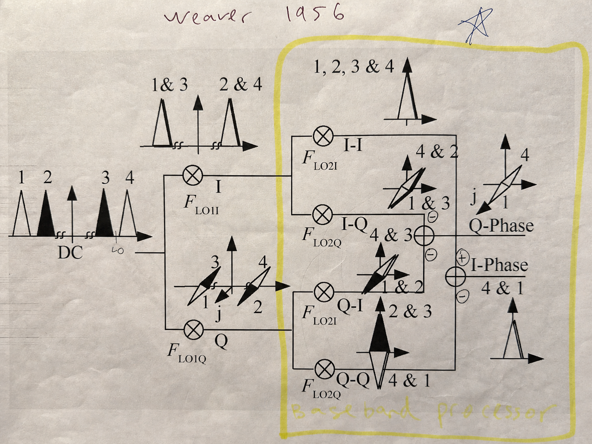
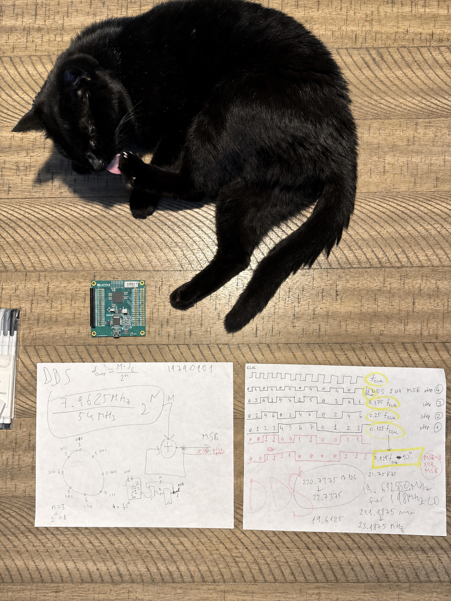
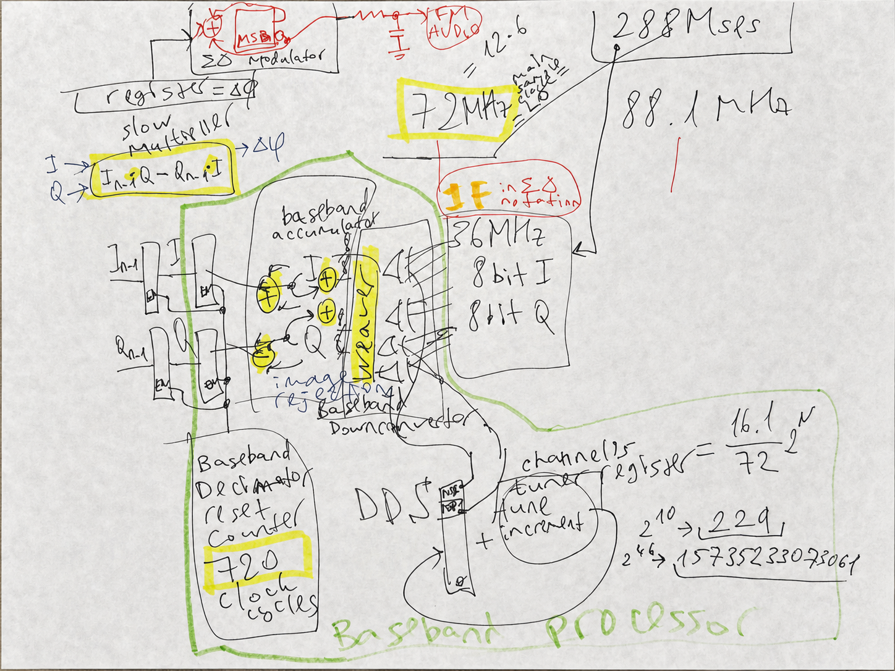
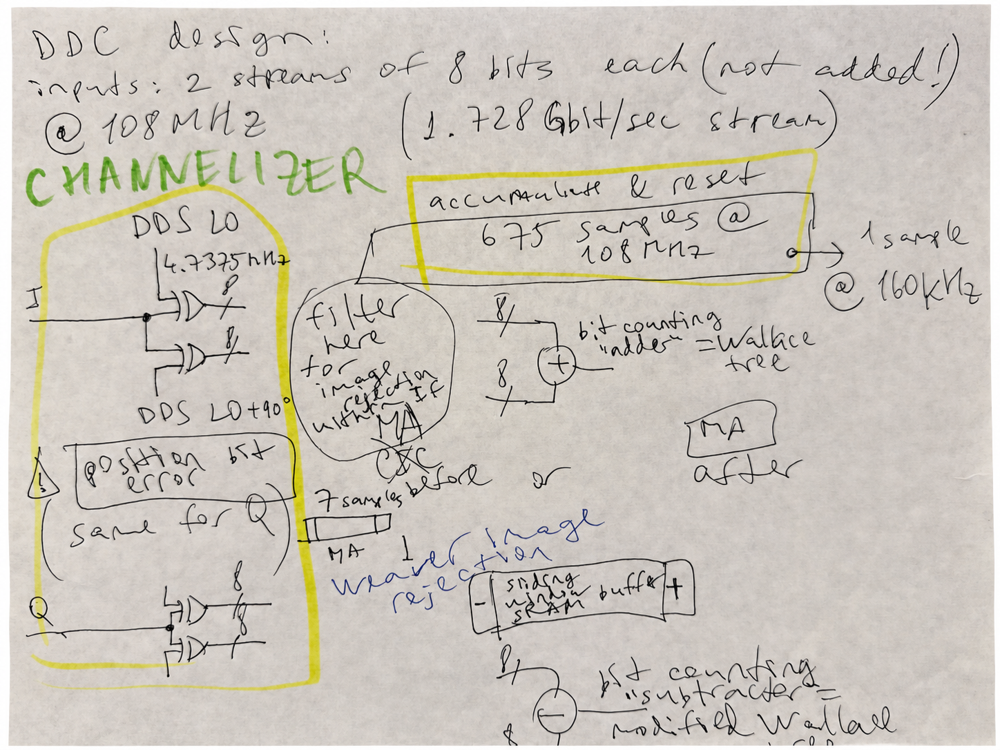
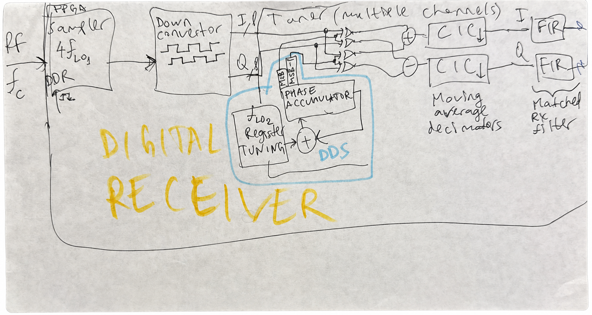

The Companion FPGA Transmit Path
The receiver is one half of the radio work. The companion One-Pin Quadrature/SDM RF Transmitter follows the reverse boundary: two one-bit control paths select among four carrier phases, gate one iCE40 output pin, and hand the result to a resonant network.
Its CubicSDR image was received through an RTL-SDR Blog V4 dongle and compares two signals: the local FPGA transmitter through the 8.5 kΩ-coupled resonant tank and a live PTC channel. It is transmitter evidence and a qualitative comparison, not a capture from this one-pin receiver. This page stays focused on the demonstrated FM receive path.
The Conventional Receiver Brings A Lot Of Apparatus
I started where people usually start. Weak RF comes in. A low-noise amplifier boosts it. A mixer multiplies it against a local oscillator. The design produces IF or baseband. An ADC samples that. Later digital stages recover the audio.
That architecture works. It also brings work of its own.
The local oscillator has to be strong. Once it gets strong, it leaks into everything. It radiates. It pollutes the board. The receiver stops being a clean signal-recovery problem and turns into a containment problem for the machinery you introduced to solve it.
Then comes the ADC. It wants clean analog amplitude. It wants drive. It wants the front end to preserve explicit values faithfully enough that the later receiver path can recover what the analog chain made expensive. Then come lookup tables, multipliers, trigonometric mixing, atan2 phase extraction, and the ordinary arithmetic cost of that representation.
That whole path works. The experiment here asks which parts are necessary for this FM receiver.
So I cut the first burden out:
I hid the local oscillator action inside the FPGA.
That removed the loudest periodic signal from the outside world. It also forced the next question.
If I do not preserve analog amplitude with a conventional mixer-plus-ADC chain, what exactly do I preserve instead?
I Stopped Trying to Digitize Amplitude
The answer was not "a cheaper ADC." The answer was: stop treating amplitude as the thing that must survive first.
I let the FPGA input threshold the incoming RF around its midpoint.
When the signal crosses that midpoint, the pin sees a zero or a one.
That is the entire front edge of the receiver.
No multi-bit sample word. No explicit analog amplitude at the pin. Just transitions.
That step is destructive to absolute RF scale. For an ideal fixed midpoint threshold, sign(A cos(ωt)) = sign(cos(ωt)) for every A > 0: two clean sinusoids that differ only in amplitude produce the same bitstream.
It does not destroy every useful property of the signal. Crossing timing and pattern can retain phase and frequency structure. Known noise or dither, a nonzero threshold offset, hysteresis, or a swept threshold can break the scale ambiguity and support calibrated detection; calibrated front-end gain can then refer that result back to the RF input plane. FM makes the timing result especially direct because its information appears as changing instantaneous frequency.
So the first real reduction was this:
RF in, transition stream out.
That move killed a huge amount of inherited baggage in one shot.
I Did Not Get That Idea from Radio
That threshold idea came from somewhere else.
About a year and a half before this receiver, I was training neural networks to discover digital circuit layouts on multiplexer-based fabrics using backpropagation. Digital logic is brutally nonlinear, so people do not normally expect those systems to train well. But I found one trick that helped a lot: I introduced a 50-50 noise process that generated zeros and ones statistically at the weight generator. Once that noise was there, simple circuits, adders for example, became much more trainable.
That left me with a useful lesson:
information can survive as binary stochastic structure.
It does not always need to survive as a clean explicit value.
I was also studying sigma-delta ADCs and DACs around that time. I had their waveforms and oscillograms printed out and kept staring at them. Sigma-delta teaches a similar lesson from another angle: a smooth analog signal can live inside a digital pulse stream far more efficiently than people assume. You do not need an explicit analog word every time you touch the signal. Transitions can carry much more structure than the ordinary sampled-amplitude mindset admits.
That did not mean I wanted a sigma-delta RF front end. In a real sigma-delta converter, the digital output feeds back into the analog side and shifts the midpoint dynamically. That feedback creates the very kind of pulsing front-end activity I was trying to avoid. I had already removed the strong external local oscillator. I did not want to solve that problem and then recreate it in another form.
So I kept the insight and rejected the architecture.
The insight said:
the one-pin input is not starved of information. It is rich in transitions.
That was enough.
What the Pin Preserves, and What It Does Not
Once I thresholded the RF at the FPGA input, I stopped asking for explicit amplitude and started asking for crossings.
That turns out to be enough for the result shown here: recovering FM structure and intelligible audio.
A fixed midpoint threshold discards absolute RF scale. In the noise-dominated region, however, coherent statistics of the one-bit stream vary with signal-to-noise ratio, allowing signal presence and relative strength to be recovered after calibration.
The recovered audio and I/Q behavior are evidence for structure recovery, not an absolute RF voltmeter. The companion transmitter and this receiver are complementary experiments, but the present public record does not establish one calibrated transmitter-to-receiver loopback run. Absolute volts or dBm would require a calibrated input gain, threshold, and noise reference, or a measurement mode that deliberately varies the threshold.
That is the core result of this design: threshold crossings preserved enough phase and frequency structure for this FM path, even though the fixed threshold did not preserve absolute amplitude.
DDR Samples Become I/Q Bit Lanes
The design idea began with four-phase sampling, but the selected fm_radio_nov15.sv snapshot must be described more exactly. One iCE40 DDR input primitive is clocked by the source-labeled 168 MHz sampler clock and records two threshold decisions per clock. The logic shifts those even and odd decisions into history, then uses fixed ordering and inversion patterns to construct two 16-lane words named samples_i and samples_q.
The file defines a 270-degree clock signal, but it does not instantiate four separately clocked input samplers. The quadrature structure in this snapshot comes from the DDR decision stream and the lane patterns that reorganize it.
That gives the later logic:
- direct and quadrature bit lanes,
- a compact input representation for DDS-controlled one-bit mixing,
- and a Weaver-style recombination path intended to reject the image.
The broader notebook pages still matter because they show how the architecture developed. They are not all parameter sheets for this exact source file.
The Weaver Lineage Is Real, but This Is Not a Facsimile

Weaver's method translates quadrature paths twice and recombines four products so the wanted sideband adds while the image cancels. The selected receiver source has the same structural idea at one-bit resolution: I and Q lane patterns, two intended-quadrature DDS sign bits, four XOR-and-popcount product terms, and sum/difference recombination.
That is why Weaver-style is the accurate phrase. This RTL does not reproduce every analog mixer and low-pass section in the 1956 figure.
I Do Not Multiply by Sines and Cosines
A conventional digital receiver path often reaches for trigonometric machinery: sine tables, cosine tables, multipliers, and explicit oscillators.
I do not need any of that here.
The signal is already in thresholded quadrature form. My digital Weaver stage flips bits in the right pattern. In practice, that means XOR operations: controlled inversion of the one-bit streams by the DDS sign bits. Population counts then turn those one-bit products into signed baseband contributions.
So the digital mixing stage becomes logic, not a sine/cosine multiplier chain.
The XOR-gate detector entry is useful adjacent context: XOR duty cycle can encode phase difference in one-bit detector topologies. It is not the FM discriminator in this selected source. Here XOR performs the one-bit mixing; the later I/Q cross product performs FM recovery.
DDS Tuning Without a Sine Table

A direct digital synthesizer adds a tuning word to a phase accumulator every clock. For an N-bit accumulator, the basic relationship is fout = M fclock / 2N. A full DDS can map phase into sine and cosine amplitude. This receiver uses a cheaper boundary: it consumes the accumulator sign or most-significant bit as a square-wave, one-bit LO.
The selected snapshot contains one 49-bit tuning path and a second accumulator intended to stay in quadrature. Those sign bits control the XOR mixers. Read Analog Devices MT-085, Fundamentals of Direct Digital Synthesis for the phase-accumulator model, tuning resolution, aliasing, and spurs. AMD's DDS Compiler core overview is useful FPGA-specific background for quadrature synthesizers in digital downconverters. These links explain the design vocabulary; they are not claims that this iCE40 source instantiates either vendor's IP.
I Do Not Use atan2 Either
The usual FM-demodulation answer is to recover explicit phase with atan2 and then differentiate it. That is expensive. It also never matched how I was already thinking.
I had been working on a DQPSK demodulator, and that had already trained me to think in relative phase change between successive I/Q vectors, not in absolute phase extraction.
So when I reached post-accumulator baseband I and Q in this receiver, I went straight to the geometric relation that mattered:
Xn = In-1Qn - Qn-1In = |zn||zn-1| sin(φn - φn-1)
That is the 2D cross product of successive I/Q vectors in the operand order used by the selected source. Reversing the operands changes only the output polarity.

atan2 demodulation thread: estimate phase movement from vector components instead of extracting absolute phase.For small phase steps, it gives a magnitude-weighted sine of the relative rotation directly. FM can use that rotation. So instead of computing atan2, then differentiating, then carrying all that arithmetic around, I compute the cross product.
Two multiplications. One subtraction. Done.
That stage fits the FM audio path, but it is not a calibrated carrier detector. A centered CW has approximately zero phase step and therefore approximately zero cross product. No-signal noise also has approximately zero mean cross product. An offset CW appears approximately as DC, while FM produces a changing output. The exposed sigma-delta audio output provides no calibrated, unambiguous decision statistic for distinguishing no detected signal from a centered CW.
The Rest of the Chain Is Simple
In the selected source snapshot, the baseband accumulators accept 80 updates of the 21 MHz processing clock, followed by one transfer/reset clock. That rectangular integrate-and-dump stage keeps rate conversion cheap, but its selectivity is limited. It is not the CIC-plus-FIR roadmap drawn in a later notebook page.
Then the cross-product demodulator recovers the FM baseband.
Then a sigma-delta output stage turns the recovered signal into audio that can drive a speaker.
So the full chain is this:
- one logical differential FPGA input site receives RF,
- the input threshold converts RF into a binary transition stream,
- DDR decisions are reorganized into 16-lane I/Q words,
- DDS sign bits control four XOR-and-popcount product terms,
- Weaver-style sum/difference recombination translates the selected channel,
- 80 processing-clock updates integrate before one transfer/reset cycle,
- a cross product between successive I/Q vectors recovers FM phase movement,
- and a sigma-delta output stage produces sound.
That is the published FM audio-recovery path.
The Verilog Follow-Up
The added source snapshot is now in one-pin-RF/README.md. The selected receiver file for this article is fm_radio_demo_2026/fm_radio_nov15.sv, because build.sh is wired to synthesize that file for an iCE40 UP5K build. The nearby fm_radio_2026_pin_4_3.sv file is a near-identical retuned variant, not the build target.
The intended build path is explicit: Yosys reads the SystemVerilog, nextpnr targets UP5K SG48 with the pin constraints, IceStorm packs the bitstream, and dfu-util downloads it. The archived source currently uses an unresolved identifier n in both sample-shift ranges, and build.sh supplies no definition. This page therefore treats it as the selected historical source snapshot, not as a freshly reproduced build; that typo or missing definition and a clean build log must be resolved before claiming source-level reproducibility.
read_verilog -sv ./fm_radio_nov15.sv
synth_ice40 -top top -json ./build/fm_radio.json
nextpnr-ice40 --ignore-loops --pre-pack ./timing.py --freq 336 --up5k --package sg48
icepack ./build/fm_radio.txt ./build/fm_radio.binThe relevant pin boundary is one RF input and one sigma-delta audio output. The constraint file maps DIFF_PINS_4P_3N to package pin 4 and PIN2 to package pin 2.
input DIFF_PINS_4P_3N,
output PIN2,
wire [1:0] RF4X_SAMPLES;
SB_IO #(
.PIN_TYPE(6'b000000),
.IO_STANDARD("SB_LVDS_INPUT")
) ddr_sampler_2 (
.PACKAGE_PIN(DIFF_PINS_4P_3N),
.INPUT_CLK(CLK_168_MHZ),
.D_IN_0(RF4X_SAMPLES[0]),
.D_IN_1(RF4X_SAMPLES[1])
);The sampler is not a metaphor. The comments in the source call the DDR input the heart of the radio. It samples binary RF decisions on both clock edges, and the code folds the even and odd history into two 16-bit quadrature words by fixed ordering and inversion.
samples_even <= {samples_even[n-1:0], RF4X_SAMPLES[0]};
samples_odd <= {samples_odd [n-1:0], RF4X_SAMPLES[1]};
samples_i <= {
samples_even[7], samples_odd[7],
~samples_even[6], ~samples_odd[6],
samples_even[5], samples_odd[5],
// same alternating pattern continues through bit 0
};
samples_q <= {
~samples_even[7], samples_odd[7],
samples_even[6], ~samples_odd[6],
~samples_even[5], samples_odd[5],
// same quadrature pattern continues through bit 0
};The digital mixer is controlled inversion. Four repeated accumulation blocks XOR one-bit I/Q lanes against the two DDS sign bits, population-count each product, and recombine the terms into the baseband accumulators.
sum <=
{ 4'd0, samples_i[ 0] ^ dds_ch1[CH1_MSB] }
+ { 4'd0, samples_i[ 1] ^ dds_ch1[CH1_MSB] }
+ { 4'd0, samples_i[ 2] ^ dds_ch1[CH1_MSB] };
sum_qq <=
{ 4'd0, samples_q[ 0] ^ dds_ch1_90[CH1_MSB] }
+ { 4'd0, samples_q[ 1] ^ dds_ch1_90[CH1_MSB] }
+ { 4'd0, samples_q[ 2] ^ dds_ch1_90[CH1_MSB] };The FM recovery stage is the same direct relative-phase calculation described above. The implementation multiplies the current and previous baseband I/Q values in the cross-product form, then feeds that into the sigma-delta output path. It does not compute or expose a parallel I/Q energy or coherent-carrier statistic.
phase_delta <= decimator[DECIMATOR_MSB] ? (
samples_bb[25:10] * samples_q_bb[25:10]
-
samples_bb_q[25:10] * samples[25:10]
) : phase_delta;
sd_dac <= {2'd0, phase_delta, 16'd0} + 34'd6442450944 +
(dac_out ? 34'd8589934592 : 34'd8589934591);
dac_out <= sd_dac[SD_DAC_MSB];
assign PIN2 = ~dac_out;That is the promised Verilog follow-up in miniature: thresholded RF enters one logical differential FPGA input, the iCE40 DDR primitive samples it, fixed lane patterns build I/Q, the DDS sign bits control one-bit mixers, the baseband path uses the cross product instead of atan2, and the recovered signal leaves as a sigma-delta bitstream.
The Notebook Trail Spans Several Receiver Generations
These pages are valuable because they show the architecture being worked out. They do not all describe the same bitstream or clock plan.
{kind=link}

{kind=link}

dirty_ptc_nov3.sv, not the selected fm_radio_nov15.sv.{kind=link}

What the Selected Snapshot Predicts, and What It Does Not Measure
The selected source is simpler than the broader architecture sketches. Its 21 MHz processing clock performs 80 accumulator updates, then spends one clock transferring and resetting the accumulator. The resulting I/Q update rate is 21 MHz / 81 = 259.26 kS/s.
For that 80-update rectangular window alone, the calculated digital response is:
- one-sided −3 dB frequency: approximately 116 kHz
- first null: 262.5 kHz
- response at 200 kHz offset: approximately −10.9 dB
- first sidelobe: approximately −13.3 dB
The 259.26 kS/s output has a 129.63 kHz Nyquist frequency, where the rectangular window is already approximately −3.82 dB. Responses outside that range alias into the output, so aliases are part of the receiver measurement, not a detail to omit.
Those are source-derived filter calculations, not measured receiver selectivity. Thresholding happens before the digital filter, so a strong off-channel signal can dominate and severely corrupt the crossing stream before the wanted channel reaches the integrate-and-dump window. A one-tone frequency sweep cannot establish blocking performance; that requires holding a wanted signal near sensitivity while raising a second, adjacent signal.
The RTL calls one logical port DIFF_PINS_4P_3N and configures it as SB_LVDS_INPUT. Physically, that mode uses the pin-4/pin-3 differential comparator pair; Lattice documents that the tool automatically assigns the complementary pin. The RF-bearing input and its companion reference/bias pin are therefore both part of the receiver boundary. The current iCE40 UltraPlus data sheet specifies guaranteed comparator HIGH and LOW regions at differential inputs of at least +250 mV and at most −250 mV for 2.5 V VCCIO; it does not specify radio sensitivity. The public artifact does not yet document the voltage and bias network on both pins, so it cannot support an absolute dBm claim.
What I Removed
I removed the parts people normally assume are untouchable:
- no strong external local oscillator spraying into the board
- no Gilbert-cell-centered analog front end
- no fast amplitude-preserving ADC at RF or IF
- no sine/cosine lookup tables
- no sine/cosine multiplier chain
- no
atan2-based phase extractor
I did not remove them out of ideology. I removed them because the demonstrated FM audio-recovery path still worked without them.
That is the whole point of the project.
A serious hardware project does more than show that something works. It shows what can disappear without breaking the thing.
Why This Receiver Matters
This is not about making radio smaller as a trick. The useful result is the receiver boundary: thresholded RF enters one digital pin, and the later path still recovers audio.
That is what this receiver exposed.
It showed that this constrained FM audio-recovery path can omit much of the conventional apparatus. It did not establish that the same path matches a conventional receiver's sensitivity, selectivity, dynamic range, calibration, or blocker tolerance.
Much later I found an obscure old Xilinx publication from roughly twenty years earlier describing an FM receiver along related lines, quiet input biasing, direct threshold behavior, no front-end sigma-delta feedback. That did not weaken the result. It strengthened it. It showed this direction was real, not fantasy, even if the mainstream story of radio ignored it.
So the one-pin FPGA FM receiver answered the only question that mattered:
How much radio do you actually need?
Less than the conventional receiver path suggests.
And that is exactly why I built it.
The Next Receiver Result
This page proves that threshold crossings preserve enough information to recover FM audio. The next result must establish a detector and a calibrated receiver boundary:
From the same thresholded RF pin, distinguish no detected signal, CW, and modulated RF at a selected frequency, with stated bandwidth, sensitivity, probability of detection, false-alarm rate, and blocker rejection.
That requires a quiet capture path for signed post-filter I/Q, raw one-density, transition count, and discriminator output; a conducted and shielded 50 Ω fixture; a frozen detector rule; terminated-input calibration; CW power and frequency sweeps; two-tone blocker tests; and FM SINAD, distortion, and deviation-linearity measurements.
The defensible absence statement will have the form: No signal of the tested class was detected within B Hz of f during T. At or above X dBm, that class was detected with PD at least 0.90 at PFA = Y per stated dwell and searched bin.
The follow-up article will be Can One Bit Tell What Is There? It will be published when those fields contain measurements rather than predictions.